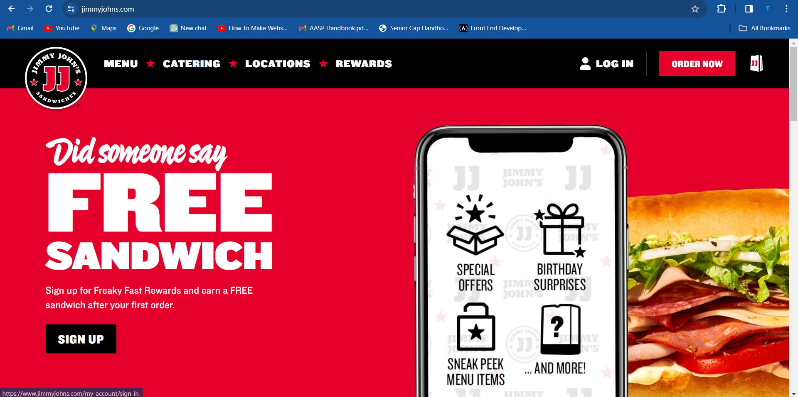
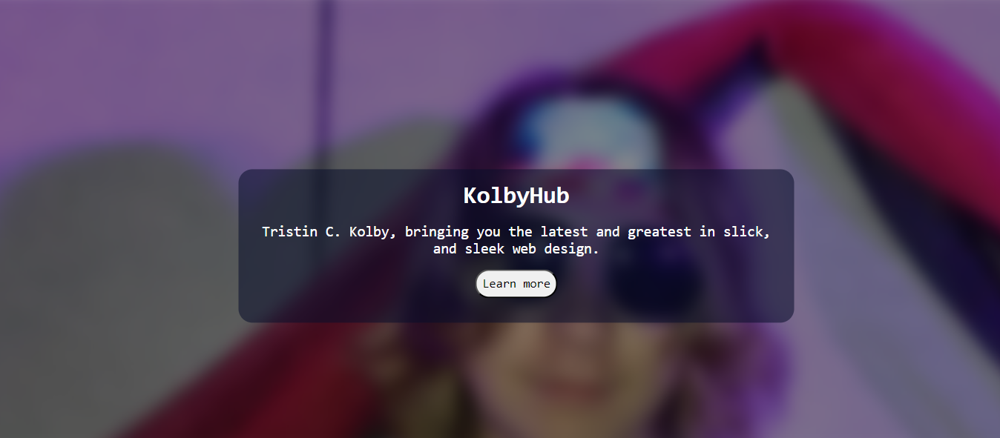

What even is a homepage, and what goes on there?
A homepage can be best explained as your website's introduction or first impression. When users open your website, the homepage is the first thing they will see. Your homepage should be brief enough to understand at a quick glance, but informative enough to explain to visitors what your website is about. Your homepage should include a quick description of what your website is about, and a call to action. Many websites will also include examples/testimonies of what they do on their homepage, when you scroll further down.
What is a call to action?
A call to action is something that prompts/encourages users to explore your website some more. Your call to action might be a button, link, form, clickable paragraph, etc. On websites, you might often see a learn more button, or a "buy now" button. That's a call to action. Now, let's go over some of these examples.
Jimmy John's website
Because I'm really hungry right now, let's take a look at Jimmy John's website.
This is a really good example of a homepage. Take a moment to pause and look it over, where's the call to action? What does this company do? This homepage features just enough information to tell the user what they are, (a sandwich company), while also not overloading the user with content. On the right side it features one of their sandwiches (this is done with the background image they used), and on the left they feature their call to action, signing up to join their rewards program and order food.
My go-to design
This is my favorite design for a homepage, or some variation of this. I like to use this template/design style because it's quick, concise, draws users to what I'm making, and it doesn't overwhelm users. It can be very tempting to attack the user with pop-ups and content right away, but it's very important to remember to keep it brief at a first glance.
The code
Here's a link to my homepage design. Please feel free to use this in your next project, and add your own creative spin on it!